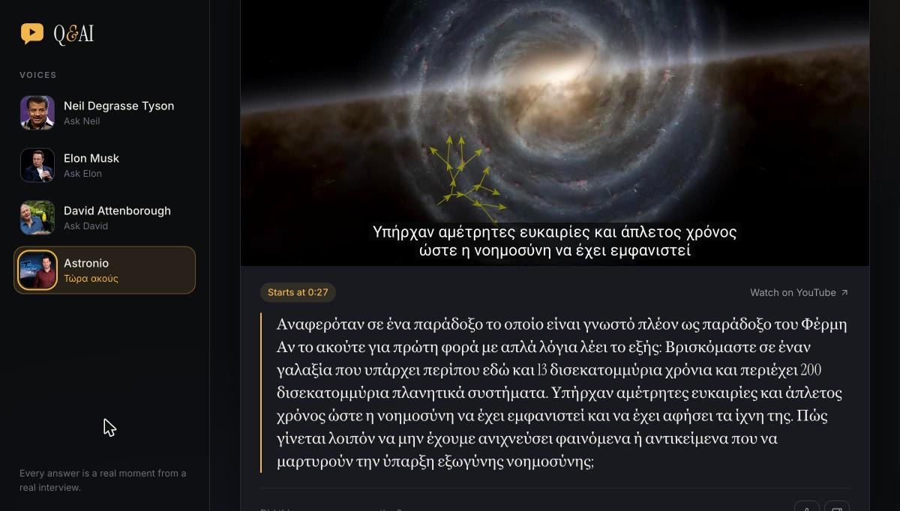
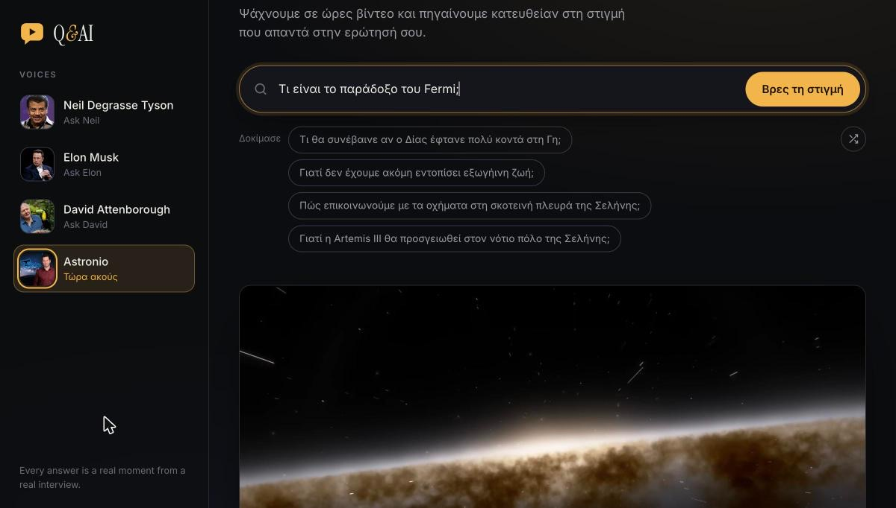

Technical case study · Closed source
Q&AI: retrieval-augmented search that lands on the exact second.
Ask a public figure a question and Q&AI plays the moment in a real interview where they answer it, with the transcript quoted underneath. The language models never write the answer: they rewrite the query and choose among real passages, and a deterministic aligner maps the chosen passage back to word-level timestamps.
Architecture
Two paths share one store. Offline, videos are discovered, transcribed with word-level timing, de-duplicated, checked for playability and embedded into one Chroma collection per person. Online, a question goes through query expansion, fused vector retrieval, LLM answer selection and timestamp alignment before the browser starts the YouTube embed at the matched second.
1 · Ingestion
Transcripts with word-level timing
Every downstream step depends on knowing when each word was spoken, so transcripts are stored as segments of words with start and end times:
[{"start": 16.22, "end": 20.88, "text": "You never know what's going to cause the next…",
"words": [{"word": "You", "start": 16.22, "end": 16.66},
{"word": "never", "start": 16.66, "end": 16.84}, …]}]Three sources feed this format:
- YouTube's speech-recognition captions. The
json3caption format carries a per-word offset (tOffsetMs) inside each caption event, so word timings can be read directly, with no audio download. Against Whisper on the same video, word start and end times agreed to a median of 0.05 s, with 99% of words within 1 s. Markup such as>>speaker changes and[music]tags (which can span several tokens) is stripped. - Hand-made captions, merged in. Speech-recognition captions have no punctuation. Where a video also has hand-made captions, the two word sequences are aligned with
difflib.SequenceMatcheron accent- and punctuation-folded tokens, and matched words take the punctuated, capitalised form while keeping the recognition timings (90–100% of words matched in practice). - Whisper, for videos with no captions. Long live streams often have none. Audio-only streams are downloaded, resampled to 16 kHz mono Opus, cut into 10-minute pieces and transcribed in parallel with
whisper-large-v3on Groq with word timestamps (about 6 s per 10 minutes of audio). Piece offsets are added back, overlapping word times are forced monotonic, and known Whisper hallucinations in silence (e.g. Greek "Υπότιτλοι AUTHORWAVE") are dropped.
Keeping the catalogue clean
- Playability. A video that can't be embedded is worse than no answer. Candidates are filtered with the Data API (privacy status,
embeddable, age restriction, region blocking) and spot-checked in the real IFrame player, where unplayable videos fail fast with error 150. The API alone caught 17 of 18 player failures with no false alarms. 32 already-indexed videos that no longer played were removed. - Duplicates. Interviews are re-uploaded by many channels. Each transcript is reduced to its set of 8-word shingles. Two recordings count as the same when ≥ 40% of the shorter one's shingles appear in the other (re-uploads share 50–90%, unrelated videos under 5%). Measuring against the shorter transcript also catches compilations that contain an existing video; the longer recording is kept and the shorter moved aside.
- Relevance. For search-based discovery, an LLM classifies each candidate from its metadata as "the person speaks for most of it" or not, which removes news segments, commentary and reaction videos.
2 · Indexing
Words are packed greedily into chunks of up to 1000 characters, so chunk text and its word-timing metadata stay in exact correspondence (the timing list is stored as JSON in the chunk's metadata). Each person is a separate Chroma collection with its own embedding model:
| Collection language | Embedding model | Dim. | Why |
|---|---|---|---|
| English | all-MiniLM-L6-v2 | 384 | Fast; 82% of chunks fit its 256-token window, the rest lose ~4% of their text |
| Greek | BAAI/bge-m3 | 1024 | hit@5 of 90% on Greek questions, vs 56–61% for smaller multilingual models and 8% for MiniLM |
Indexing is incremental and self-healing: on startup each collection embeds only videos it doesn't have, adds a video's chunks in one batched call (so an interrupted build leaves whole videos, never half of one), and deletes the chunks of any video whose transcript has been removed from the folder. bge-m3 runs on the Apple GPU (MPS) when available, about 3× faster than CPU.

3 · Retrieval
Query expansion
Questions and answers are phrased differently ("Why did you start SpaceX?" vs "I thought the odds of success were less than 10%"). A small LLM (gpt-oss-20b, low reasoning effort) writes five answers in the person's voice and in the language of their transcripts, so a Greek collection is searched in Greek even if the question is in English. These hypothetical answers act as additional queries.
Weighted reciprocal rank fusion
The original question and the five rewrites are embedded in one batched call and each returns its top 8 chunks. The first version ranked chunks by how many queries returned them; on a sample of 12 questions every top-5 contained ties, so the order the answer model saw was arbitrary. Results are now fused with reciprocal rank fusion, with the original question weighted three times as heavily as a rewrite:
The weight was chosen by sweeping \(w_{\text{original}} \in \{0, 1, 2, 3, 5\}\) on 150 evaluation questions: hit@1 rose from 58% to 64% at \(w = 3\) with hit@5 at 89%, combining the precision of the literal question with the recall of the rewrites.
Boundary-aware context
Each of the top 5 chunks is passed to the answer model together with the chunk that follows it in the same video (fetched in one batched get by id). This fixed a class of failures where the question ends one chunk and the answer starts the next: "Why did you start SpaceX?" had been returning the three-word fragment "Yes. And to".
4 · Answer selection
The answer model receives the question and five numbered excerpts and must return <excerpt number>: <verbatim passage>, or a sentinel when nothing is relevant. The prompt constrains it to:
- pick the excerpt that answers the question, not one that is merely on topic;
- start at the first sentence that already answers it (no lead-in, no interviewer question);
- copy contiguously and verbatim, with no ellipses or edits;
- prefer passages spoken by the person, and give the closest partial answer rather than none.
The original prompt asked for "a reasonably large subchunk… plenty of context", which pulled clip starts earlier. Prompt variants and Groq-hosted models (gpt-oss-120b, gpt-oss-20b, Qwen 3.6 and Qwen 3.8, with and without thinking) were compared with the LLM-judged harness below; qwen3.8-27b with the new prompt and next-chunk context matched the best model's quality at roughly a seventh of its latency. Calls stream with a 20 s timeout and a single retry; on rate limits, timeouts or 5xx errors the request falls back to gpt-oss-120b, and any leaked <think> blocks are stripped.
5 · Timestamp alignment
The model returns text, not times, and it doesn't copy perfectly. The aligner finds where that text sits in the chunk's word list and returns the first word's start time.
The first implementation searched for the quote's first sentence and took its earliest occurrence. Spoken answers often open with "Yeah." or "Okay.", which occur repeatedly in a chunk, so 11.5% of clips started more than 5 s early, by up to 40 s. The current algorithm:
# simplified
def align(quote, words):
w = [normalize(x.word) for x in words] # lowercase, strip punctuation and accents
first, last = split_on_ellipsis(quote) # "…" means the model skipped a part
i, score = best_window(w, first[:12], tiebreak=first[:48])
j, _ = best_window(w, last[-12:], tiebreak=last[-48:], align="end")
if score < 60:
return None # caller tries the other retrieved chunks
return time_of(words, i, "start", step=+1) - 0.3 # nearest word that has a timestamp
def best_window(w, anchor, tiebreak, align="start"):
k = len(anchor)
scores = [fuzz.ratio(" ".join(w[i:i+k]), " ".join(anchor)) for i in range(len(w) - k + 1)]
best = max(scores)
tied = [i for i, s in enumerate(scores) if s >= best - 2]
# several near-equal positions (repeated phrases): compare a 4x longer window,
# extending forwards for the start anchor and backwards for the end anchor
return max(tied, key=lambda i: window_score(w, i, tiebreak, align)), scores[...]- Anchors, not sentences. 12-word windows at the start and end of the quote are unique enough to ignore repeated fillers, and the score is maximised over every position rather than accepting the first that passes a threshold.
- Tie-breaking. Positions within 2 points of the best are disambiguated with a 48-word window, aligned forwards for the start and backwards for the end.
- Robustness. Missing word timings (speech recognition skips some numbers) fall back to the nearest timed word instead of 0:00; if the chosen chunk scores below 60, all retrieved chunks are searched, which also recovers from the model citing the wrong excerpt number; the displayed quote is extended to at least 30 words of what actually plays.
Benchmarked on 600 passages of 15+ words sampled from real transcripts, each tested verbatim and with five perturbations that mimic model behaviour (punctuation changes, dropped fillers, a skipped middle with "…", a start mid-sentence, small rewording):
| Perturbation | Start within 1 s | Start off > 5 s | End within 1.5 s |
|---|---|---|---|
| Exact copy | 87.7% → 99.8% | 11.5% → 0.0% | 89.0% → 99.8% |
| Fillers dropped | 87.0% → 99.2% | 11.7% → 0.2% | 88.8% → 99.8% |
| Middle skipped ("…") | 92.3% → 100% | 5.5% → 0.0% | 96.0% → 99.8% |
| Starts mid-sentence | 89.5% → 99.7% | 10.5% → 0.3% | 88.2% → 99.8% |
| Small rewording | 83.7% → 99.8% | 15.3% → 0.0% | 80.5% → 99.8% |
assets/img/qandai/answer.png
6 · Evaluation
Every retrieval, prompt and model change was decided by an evaluation harness rather than by spot checks. It has three modes:
- Retrieval. An LLM writes one natural question per randomly sampled chunk (told not to reuse distinctive phrasing, and to skip chunks with no substance), giving a fixed set of 150 questions with a known source chunk. Metrics: hit@1, hit@5, MRR, and "right spot @5" (the source chunk or a neighbour in the top 5). Query rewrites are computed once per configuration and reused, so fusion variants are compared on identical inputs.
- End to end. The full pipeline on the same questions: whether the played clip falls inside the source chunk's time range, the rate of "no moment found", unmatched answers, and per-stage latency.
- Answer quality. For each configuration, retrieval runs once so all prompts and models see identical excerpts; two judges from different model families score the played transcript 1–5 for directness and whether its first two sentences address the question. The set mixes 70 generated questions with 41 of the app's suggested questions, which are vaguer and have no single correct chunk.
| Change | Metric | Before | After | n |
|---|---|---|---|---|
| Vote counting → weighted RRF (\(w=3\)) | hit@1 / hit@5 | 58% / 86% | 64% / 89% | 150 |
| Smaller rewrite model, low reasoning effort, batched queries | latency (accuracy) | 2.91 s (75%) | 1.34 s (75%) | 150 |
| New prompt, Qwen 3.8, next-chunk context | starts on point | 50% | 73% | 111 |
| New prompt, Qwen 3.8, next-chunk context | good answer (≥ 4/5) | 66% | 74% | 111 |
| MiniLM → bge-m3 (Greek) | hit@5 | 8% | 90% | 100 |
Generated questions are written while looking at the chunk, so they are more specific than real user questions; absolute scores are best read as comparisons between configurations. With n ≈ 100–150, differences under ~5 points are within noise, which is why candidate configurations were re-run head-to-head on the same retrieval before choosing.
The finding that reshaped priorities: after the retrieval fixes, end-to-end accuracy didn't move, because the answer model reads all five excerpts and the bottleneck had become whether the right chunk reaches the top 5 at all, and whether the model picks it. That moved effort from ranking to answer selection and context.
7 · Performance
Measured per stage on live searches (mean of four questions each):
| Stage | English (MiniLM) | Greek (bge-m3) | Why Greek is slower |
|---|---|---|---|
| Query expansion | 0.73 s | 1.96 s | Greek tokenises into ~2.5× more tokens: ~1,380 output tokens vs ~560 |
| Embedding + vector search | 0.68 s | 1.49 s | bge-m3 has ~25× the parameters of MiniLM |
| Answer selection | 0.61 s | 0.70 s | about the same |
| Total | 2.05 s | 4.38 s |

assets/img/qandai/mobile.png
8 · Serving and operations
- App. Flask served by waitress; Chroma collections are opened once and shared across request threads. The visitor's chosen person is a cookie and is sent with each search, so concurrent visitors don't share state.
- Abuse protection. Every search costs several paid LLM calls, so a sliding-window limiter caps searches at 6 per visitor per minute, 100 per visitor per day and 2,000 site-wide per day, with a 500-character question limit. A
.envswitch disables it for local development and defaults to on. - Configuration. People are data, not code: each entry sets its transcript folder, embedding model, language, persona for the prompts, page text and suggested questions. Adding a Greek speaker required no code changes beyond making those fields exist.
- Quality gates. uv-managed dependencies with a lock-file check, ruff, compile checks and unit tests (timestamp alignment, Greek accent folding, rate limits) run on every push in GitHub Actions.
Limitations and next steps
- Cross-encoder re-ranking of a wider candidate set (e.g. 20 → 5), since the remaining errors are mostly the right chunk missing from the top 5.
- Sentence-index answers: number the sentences in each excerpt and have the model return a range instead of copying text. Shorter outputs, exact end times, and no fuzzy matching.
- Sentence-aware chunking with overlap, under the embedding model's token limit, instead of fixed 1000-character packing.
- Lower Greek latency: fewer or shorter rewrites, or none, now that bge-m3 is strong on the raw question; to be decided with the harness.
- Speaker attribution: transcripts don't separate the interviewer from the guest, so a clip can occasionally start on the question rather than the answer.
My contributions
- The evaluation harness (retrieval, end-to-end and LLM-judged answer quality) and the retrieval, prompt and model changes it drove.
- The timestamp-alignment algorithm and its benchmark.
- Multilingual support and the Greek collection: per-person embedding models, language-aware prompts, caption parsing and the Whisper ingestion path.
- The ingestion pipeline: discovery, de-duplication and playability checks, and the redesigned interface.